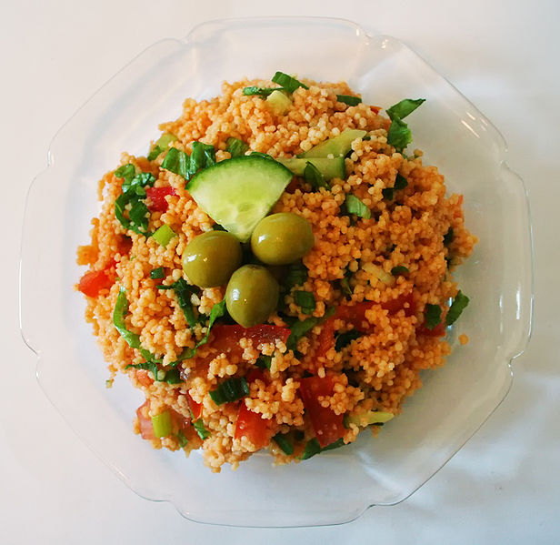

Kisir Style couscous

Für zwei Personen
Zutaten
- 250 g Couscous
- 3 EL Tomatenpüree
- 1 gehäufter EL Harissa
- 100g Nüsse (z.B. Baumnüsse)
- 2 Peperoni
- 4 Tomaten
- frische Kräuter
- 1 Zitrone / Limette
- Halloumi
- Salz
- Pfeffer
- Olivenöl
- Granatapfelkerne
Vorgehen
- Wasser aufkochen
- Couscous mit Tomatenpüree, Harissa, Salz und Pfeffer in eine Schüssel geben und mit kochendem Wasser überdecken (ca. 1cm). Mischen und zudecken.
- Nüsse in Bratpfanne golden braten.
- Gemüse, Kräuter und Nüsse in Stücke schneiden
- Nüsse, Gemüse und Kräuter unter Couscous mischen
- Zitronenschale in Couscous reiben. Zitronensaft ausdrücken.
- Olivenöl zugeben und beimischen.
- Halloumi in Scheiben schneiden und in ein wenig ÖL auf allen Seiten golden braten.
- Halloumi zugeben und mit restlichen Kräutern und Granatapfelkerne anrichten.
Quelle: Kisir Style Couscous